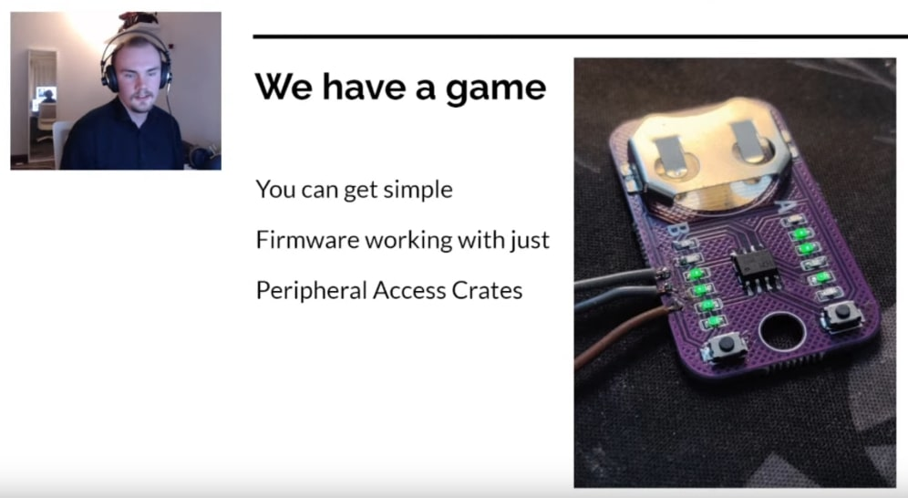
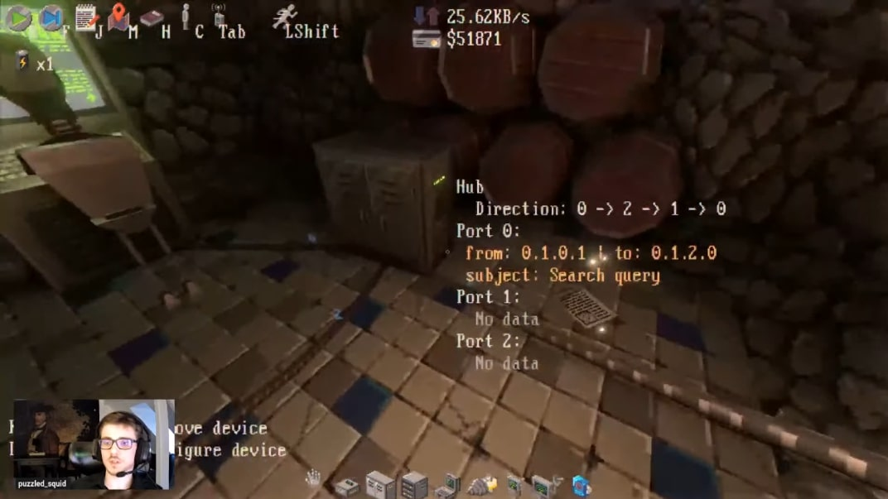

Rust Gamedev Meetup 31

The 31th Rust Gamedev Meetup took place on October 14th. You can watch the recording of the meetup here on YouTube. The meetup will take place on the Rust Gamedev YouTube and Twitch. The meetups take place on the second Saturday of every month via the Rust Gamedev Discord server and are also streamed on Twitch.
Talks
Games, but no video: Embedded trinkets in Rust | @Noxim

An overview of making games with constrained hardware
Tunnet | @puzzled_squid

A short game where you design, build, and optimize a computer network in an underground complex
